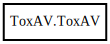

ToxAV
Object Hierarchy:

Description:
[ Compact ]
public class ToxAV
The ToxAV instance type. Each ToxAV instance can be bound to only one Tox instance, and Tox instance can have only one ToxAV instance.
One must make sure to close ToxAV instance prior closing Tox instance otherwise undefined behaviour occurs. Upon closing of ToxAV
instance, all active calls will be forcibly terminated without notifying peers.
Content:
Properties:
- public Tox tox { get; }
Returns the ToxCore.Tox
instance the A/V object was created for.
Static methods:
Creation methods:
Methods:
- public bool answer (uint32 friend_number, uint32 audio_bit_rate, uint32 video_bit_rate, out ErrAnswer error)
Accept an incoming call.
- public bool audio_send_frame (uint32 friend_number, int16[] pcm, size_t sample_count, uint8 channels, uint32 sampling_rate, out ErrSendFrame error)
Send an audio frame to a friend.
- public bool audio_set_bit_rate (uint32 friend_number, uint32 bit_rate, out ErrBitRateSet error)
Set the bit rate to be used in subsequent video frames.
- public bool call (uint32 friend_number, uint32 audio_bit_rate, uint32 video_bit_rate, out ErrCall error)
Call a friend. This will start ringing the friend.
- public bool call_control (uint32 friend_number, CallControl control, out ErrCallControl error)
Sends a call control command to a friend.
- public void callback_audio_bit_rate (AudioBitRateCallback callback)
Set the callback for the `audio_bit_rate` event. Pass NULL to unset.
- public void callback_audio_receive_frame (AudioReceiveFrameCallback callback)
Set the callback for the `audio_receive_frame` event. Pass NULL to
unset.
- public void callback_call (CallCallback callback)
Set the callback for the `call` event. Pass NULL to unset.
- public void callback_call_state (CallStateCallback callback)
Set the callback for the `call_state` event. Pass NULL to unset.
- public void callback_video_bit_rate (VideoBitRateCallback callback)
Set the callback for the `video_bit_rate` event. Pass NULL to unset.
- public void callback_video_receive_frame (VideoReceiveFrameCallback callback)
Set the callback for the `video_receive_frame` event. Pass NULL to
unset.
- public void iterate ()
Main loop for the session. This function needs to be called in
intervals of ToxAV.iteration_interval() milliseconds. It is best
called in the separate thread from tox_iterate.
- public uint32 iteration_interval ()
Returns the interval in milliseconds when the next
ToxAV.iterate call should be. If no call is active at the moment, this function
returns 200.
- public bool video_send_frame (uint32 friend_number, uint16 width, uint16 height, uint8[] y, uint8[] u, uint8[] v, out ErrSendFrame error)
Send a video frame to a friend.
- public bool video_set_bit_rate (uint32 friend_number, uint32 bit_rate, out ErrBitRateSet error)
Set the bit rate to be used in subsequent video frames.